Практичні курси · журнал «ДентАрт» 2015 №1 (78)
Естетика і відбілювання ендодонтично лікованих зубів (огляд методик)
ESTHETICS AND WHITENING OF TEETH AFTER ENDODONTIC TREATMENT (OVERVIEW OF METHODS)
Вступ
Красива усмішка — невербальний символ успішності та здоров'я. Естетика в зоні усмішки — фактор, на який звертають увагу як пацієнти, так і лікарі. З розвитком стоматології естетичні вимоги пацієнтів зросли, і для лікаря одними з найбільш складних клінічних випадків є дисколорити зубів.1-3
Адгезивна техніка дозволяє стоматологові зберегти значну кількість твердих тканин, зберігаючи біомеханіку зубів, а широкий спектр можливих варіантів корекції та відновлення у прямій і непрямій техніці забезпечує високоестетичні результати роботи.
Відбілювання — найбільш консервативний, простий і недорогий метод втручання, який дає можливість зберегти велику кількість тканин зубів. Ця процедура може бути внутрішньою (у межах порожнини зуба) чи зовнішньою (з боку поверхні емалі).4
Перед відбілюванням важливо встановити причину дисколориту, визначити локалізацію пігментуючого агента і можливі підходи до лікування. Слід також оцінити надійність результатів лікування — наскільки успішним і довговічним буде відбілювання. Інакше кажучи, перед спробою усунення дисколориту необхідно провести діагностику — визначити причину і локалізацію дисколориту; скласти план лікування — обрати методику внутрішньоканального або зовнішнього відбілювання; оцінити прогноз найближчих та віддалених результатів лікування. Пацієнтів слід проінформувати про ці фактори до початку втручань, оскільки при будь-якому дисколориті не завжди можливо досягти поліпшення у процесі відбілювання. Однак при виборі правильної техніки відбілювання та дотриманні протоколу ризик розвитку незворотних ушкоджень коронкової і кореневої частин зуба мінімальний.
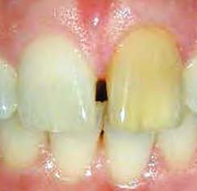
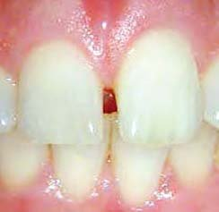
Причини дисколоритів
Дисколорити виникають у процесі розвитку або після формування емалі та дентину. Найчастіше вони є результатом стоматологічних втручань (ятрогенний фактор).
Набуті дисколорити
Некроз пульпи
Бактеріальне, механічне або хімічне подразнення пульпи може призводити до її некрозу. В результаті виникають речовини, що утворюються в процесі розпаду тканин. Ці забарвлені сполуки проникають у дентинні канальці, змінюючи відтінок дентину. Ступінь дисколориту безпосередньо залежить від того, наскільки довго пульпа перебувала у стані некрозу. Цей тип дисколориту може бути освітлений шляхом внутрішньоканального відбілювання з гарними результатами у найближчі та віддалені терміни спостереження (фото 2).
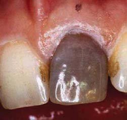
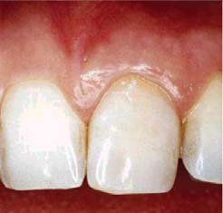
Внутрішньопульпарна геморагія
Зазвичай внутрішньопульпарна геморагія асоційована з травмою, що призводить до розриву кровоносних судин пульпи, крововиливу та лізису еритроцитів (фото 3). Імовірно, побічні продукти руйнування еритроцитів, в основному сульфіти заліза, проникають у дентинні канальці, викликаючи забарвлювання твердих тканин. Профарбовування при цьому має тенденцію до посилення.
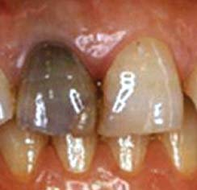
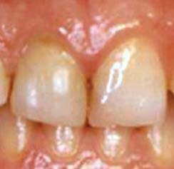
При некрозі пульпи зміна відтінку зберігається. Якщо пульпа зберігає життєздатність, дисколорит може усуватися і відтінок зуба відновлюється. Іноді у пацієнтів молодого віку дисколорит зберігається, незважаючи на те, що пульпа реагує на тести вітальності.5, 6
Кальцифікація
Кальцифікація — надмірне формування третичного (іррегулярного вторинного) дентину в межах порожнини зуба і стінок кореневого каналу.
Цей процес може бути наслідком травми, яка не призвела до некрозу пульпи. У цьому випадку діагностується тимчасове порушення кровообігу з частковою деструкцією одонтобластів. Такі дефекти швидко заміщуються іррегулярним дентином у зоні порожнини зуба і на стінках кореневого каналу. Як результат, коронкова частина зуба здається плоскою, оскільки тканини зуба втрачають прозорість і набувають жовтуватого або жовтувато-коричневого відтінку (фото 4 а, б). Пульпа зазвичай зберігає вітальність, і ендодонтичне лікування не потрібне.
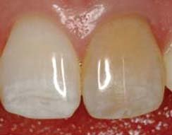
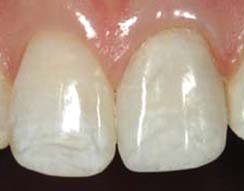
Обтураційні матеріали
Обтураційні матеріали — це найчастіша причина виникнення дисколоритів зубів. Неповне видалення матеріалу з порожнини зуба часто призводить до його потемніння (фото 5 а-в). Видалення всього обтураційного матеріалу до цервікального і ясенного рівня може запобігти виникненню дисколориту. Прогноз відбілювання залежить і від складу силера. Залишки оксидевгенольного силера мають тенденцію до потемніння з часом.7, 8
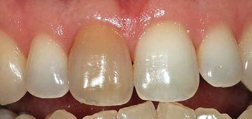
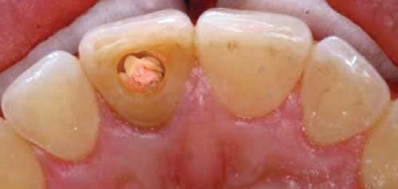
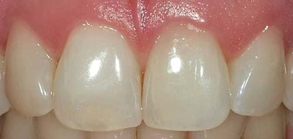
Залишки пульпової тканини
Фрагменти пульпи, що залишилися в коронковій частині зуба, особливо в зоні рогів пульпи, можуть призвести до дисколориту. Слід контролювати видалення залишків пульпи із цієї зони на етапі створення ендодоступу, хемомеханічної обробки кореневого каналу, а також на етапі внесення силера. Внутріканальне відбілювання у таких випадках достатньо ефективне (рис. 1. а, б).9
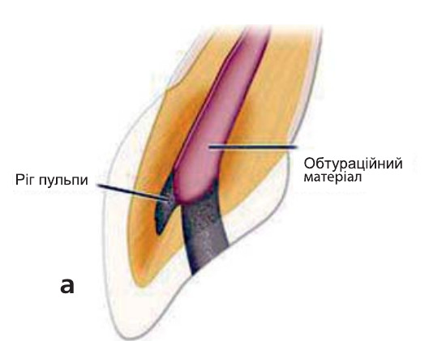
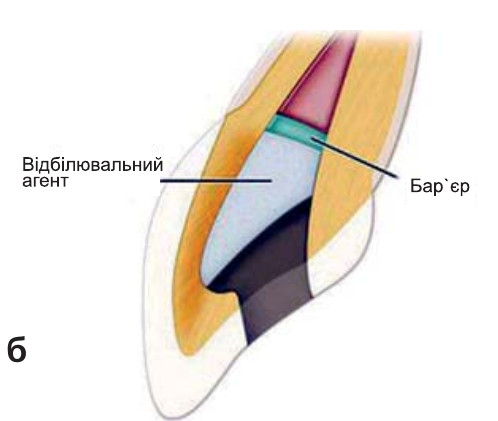
Внутрішньоканальні медикаменти
Деякі медикаменти можуть призводити до зміни відтінку дентину.10 Феноло- і йодоформвмісні внутрішньоканальні медикаменти, які тривалий час перебувають у безпосередньому контакті з дентином, глибоко проникають у тверді тканини зуба і піддаються окисленню. Ці складові мають тенденцію до забарвлювання дентину.
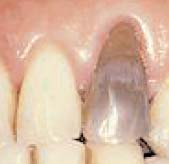
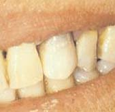
Історія відбілювання
Відбілювання пігментованих, девітальних зубів уперше описано 1864 року. З цією метою використовувалася низка медикаментозних засобів: хлориди, гіпохлорит натрію, перборат натрію, а також перекис водню, як окремо, так і в комбінації. Додатково застосовувалася термічна активація.
Техніка домашнього відбілювання, запропонована у 1961 році, включає внесення суміші перборату натрію і води в порожнину зуба між візитами. Цей метод пізніше модифікований, і для поліпшення відбілювального ефекту вода була замінена на 30-35% розчин перекису водню.
Наприкінці 60-х років минулого століття виявлено відбілювальний ефект перекису карбаміду, коли ортодонт призначив пацієнтові антисептик, що містить 10% пероксиду карбаміду, в капі для лікування гінгівіту. Своїми спостереженнями він поділився з колегами, що дало початок техніці відбілювання з використанням кап. Лише через 20 років метод «нічного» відбілювання з використанням капи і 10% перекису карбаміду був детально описаний у літературі.11-16
Матеріали та методики
Існують дві техніки для внутрішньоканального відбілювання: офісна техніка і техніка домашнього відбілювання.14 Офісна техніка передбачає використання Супероксил/Superoxyl 30-35% концентрації, H2О2 і нагрівання. Ця методика досить ефективна, проте окислювальний агент занадто сильний.11, 14, 16 У 6-8% випадків існує ризик розвитку цервікальної резорбції, який підвищується до 18-25% при додатковому використанні термоіндукції.17-20 Методика домашнього відбілювання включає застосування суміші перборату натрію і води або 30% перекису водню (Супероксил) і може використовуватися, якщо офісна техніка не дала задовільних результатів або для запобігання ризику виникнення цервікальної резорбції кореня.21-23 Свіжий перборат натрію — це 95% перборат, що вивільняє 9,9% доступного кисню. Цей матеріал безпечний, і його легко контролювати. Тому перборат натрію є матеріалом вибору.11, 21, 24
Відбілювальні матеріали
Відбілювальні субстанції впливають як окислювачі та редукуючі агенти. Найпоширенішими є розчини перекису водню різної концентрації, перборат натрію і перекис карбаміду. Перборат натрію і перекис карбаміду є хімічними сполуками, які поступово дисоціюють з вивільненням низьких концентрацій перекису водню. Перекис водню і перекис карбаміду в основному рекомендовані для екстракоронкового вибілювання, у той час як перборат натрію переважно використовується для внутрішньоканального відбілювання.
Перекис водню
Перекис водню — потужний окислювач, доступний у різних концентраціях. Найчастіше використовується 30-35% стабілізований розчин (Супероксил, пергідроль). Ці висококонцентровані розчини слід застосовувати з великою обережністю, тому що вони нестабільні і швидко виділяють кисень. Їх слід зберігати у холодильнику, в темному контейнері. Крім того, це їдкі хімічні агенти, які можуть викликати ушкодження м'яких тканин.
Незважаючи на те, що 30-35% перекис водню забезпечує швидкий відбілювальний ефект, інші хімічні сполуки, які виділяють нижчі концентрації пероксиду, зазвичай ефективно відбілюють тверді тканини зубів протягом тривалішого періоду.25
Перборат натрію
Перборат натрію доступний у вигляді порошку. У чистому вигляді він містить 95% перборат, що відповідає приблизно 9,9% вивільненого кисню. Перборат натрію стабільний у сухому вигляді, проте в присутності кислоти, теплого повітря або води він розщеплюється з утворенням метаборату натрію, перекису водню і кисню.26 Існують різні види перборату натрію: моногідрат, тригідрат і тетрагідрат. Вони відрізняються вмістом кисню, який визначає ефективність відбілювання.27 Зазвичай використовуються лужні розчини перборату натрію; їх pH залежить від кількості виділеного перекису водню і залишкового метаборату натрію.28
Перборат натрію легше контролювати, і він безпечніший, ніж концентровані розчини перекису водню.29 Тому він є матеріалом вибору для внутрішньоканального відбілювання.
Перекис карбаміду
Перекис карбаміду, також відомий як перекис сечовини, доступний у концентраціях від 3% до 15%. Популярні комерційні препарати зазвичай містять 10-15% перекису карбаміду з pH 5-6,5. Вони також містять гліцерин або пропіленгліколь, станат натрію, фосфорну або лимонну кислоту, віддушку. У деякі препарати додають карбопол і водорозчинну смолу для пролонгування вивільнення активного пероксиду і збільшення терміну зберігання. 10% пероксид карбаміду дисоціює з утворенням сечовини, аміаку, вуглекислого газу і приблизно 3,5% перекису водню (рис. 2).
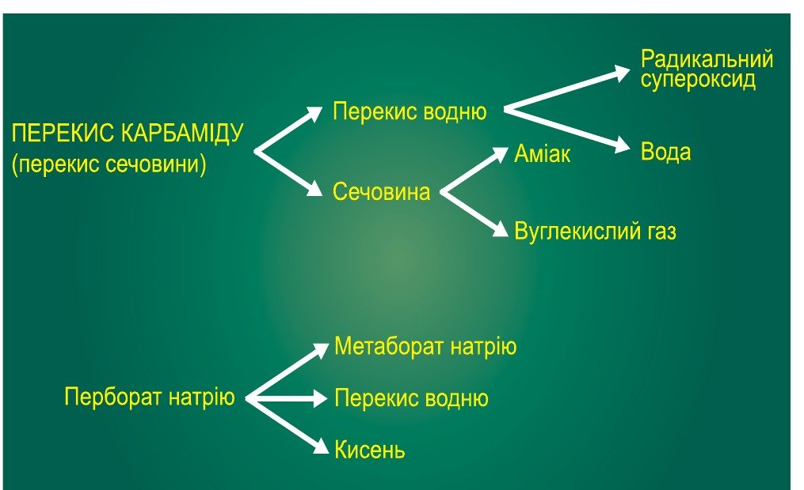
Рис. 2. Дисоціація відбілювальних агентів.
Перекис карбаміду переважно використовується для зовнішнього відбілювання. 30, 31 Ці агенти можуть значно знижувати міцність адгезії композитів і впливати на якість крайового прилягання.30, 32, 33 Їх слід застосовувати з обережністю, під контролем стоматолога.
Інші агенти
У минулому для внутрішньоканального відбілювання застосовувався моногідрату пероксиборат натрію, що виділяє більше кисню, ніж перборат натрію.34 Сьогодні цей препарат у клініці практично не застосовується.
Гіпохлорит натрію — розчин, що зазвичай застовується для іригації кореневих каналів у 3-6% концентрації. Незважаючи на те, що гіпохлорит натрію широко використовується як побутовий відбілювач, він виділяє недостатню кількість окислювача і не рекомендується для відбілювання.
Показання до внутрішньоканального відбілювання:
- дисколорити внутрішньопульпарної природи;
- дисколорити дентину;
- дисколорити, що не піддаються екстракоронковому відбілюванню.
Протипоказання до внутрішньоканального відбілювання:
- поверхневі дисколорити емалі;
- вади розвитку емалі;
- значна втрата дентину;
- каріозний процес.
Внутрішньоканальні техніки відбілювання девітальних зубів
Для відбілювання девітальних зубів використовується термокаталітична техніка, а також техніка домашнього відбілювання. Ці техніки дещо відрізняються одна від одної, але мають схожі результати.4-6
Техніка домашнього відбілювання краща, тому що вона не вимагає тривалого часу на прийомі, а також комфортна і безпечна для пацієнта.
Будь-яка техніка відбілювання передбачає використання як активного інгредієнта окисного агента.
Термокаталітична техніка
Термокаталітична техніка включає внесення окисного агента в порожнину зуба з подальшим застосуванням теплового джерела (галогенова лампа, нагрітий інструмент, електричний прилад).
Після застосування термокаталітичної техніки існує ризик розвитку зовнішньої цервікальної резорбції кореня внаслідок ушкодження цементу і періодонтальної зв'язки.35, 36 Тому нагрівання у процесі відбілювання має бути обмежене. Згідно з літературними даними, не виявлено переваг при використанні термокаталітичної техніки у порівнянні зі стандартною методикою. Одним з видів термокаталітичної активації є ультрафіолетова фотооксигенація. У порожнину зуба на ватній кульці вноситься 30-35% розчин перекису водню з подальшим 2-хвилинним опроміненням ультрафіолетом по вестибулярній поверхні зуба. Дослідження показують аналогічний рівень виділення кисню у порівнянні з іншими термокаталітичними техніками відбілювання.37, 38
Зважаючи на можливу токсичність і ускладнення, пов'язані із застосуванням концентрованих розчинів перекису карбаміду, ця методика не рекомендується.
Домашнє відбілювання
За необхідності використовується техніка домашнього внутрішньоканального відбілювання — не тільки завдяки свій ефективності, але і внаслідок того, що ця методика безпечніша і не вимагає тривалих стаціонарних відвідувань.39-42
Покрокова техніка домашнього відбілювання:
- Як було зазначено раніше, слід визначити причину дисколориту, тактику лікування, передбачуваний результат і можливе поновлення дисколориту (регресію). Потрібно обговорити з пацієнтом усі ці фактори з метою інформування його про всі можливі результати та ризики, які можуть виникнути на етапах лікування дисколориту.
- Попереднє рентгенологічне дослідження дозволяє оцінити стан періапікальних тканин і якість ендодонтичного лікування. Невдале ендодонтичне лікування, негерметична обтурація вимагають повторного ендодонтичного втручання.
- За наявності реставрації оцінюється її якість і відтінок, і при необхідності її слід замінити, тому що найчастіше саме дисколорити можуть стати наслідком підтікання та зміни відтінку пломби. Пацієнт повинен бути поінформований, що відбілювання може тимчасово або постійно впливати на відтінок реставрації.
- Визначається відтінок зуба за шкалою ВІТА/VITA і проводиться фотореєстрація перед початком і в процесі відбілювання. Це дозволяє вести динамічне спостереження за отриманими результатами.
- Зуб ізолюється рабердамом. При використанні висококонцентрованих (30-35%) розчинів перекису водню провадиться додаткова ізоляція герметиками (OpalDam, OraSeal та ін.) для запобігання підтіканню та ушкодженню м'яких тканин. У такому захисті немає необхідності, якщо використовується перборат натрію.
- Видалення реставраційного і обтураційного матеріалу із зони доступу — один з важливіших етапів у процесі відбілювання. Необхідно оцінити якість очищення порожнини зуба і зони рогів пульпи.
- Якщо причиною дисколориту є металеві включення або в друге і третє відвідування результат відбілювання незадовільний, слід видалити тонкий шар пігментованого дентину з боку порожнини зуба. При цьому не тільки видаляється пігментований дентин, але й відкриваються дентинні канальці для кращого проникнення відбілювального агента.
- Усі матеріали мають бути видалені до рівня ясенного краю. Для видалення надлишків обтураційних матеріалів застосовуються розчинники (апельсинова олія, хлороформ, ксилол) на ватній кульці.
- При використанні Супероксил слід внести захисний бар'єр (полікарбоксилатний, цинкфосфатний, склоіономерний цементи) товщиною не менше 2 мм на обтураційний матеріал. Це необхідно для мінімізації підтікання відбілювального агента.39 Бар'єр повинен захищати дентинні канальці, а також зовнішнє епітеліальне прикріплення.40 Додаткове кислотне протравлювання дентину ортофосфорною чи іншою кислотою для видалення змащеного шару і відкриття дентинних канальців нееффектівне.41 Використання будь-яких їдких речовин у порожнині зуба є необґрунтованим, тому що може призвести до ушкодження періодонтальної зв'язки або зовнішньої резорбції кореня. Те ж саме стосується і попереднього застосування розчинників, таких як ефір або ацетон, перед нанесенням відбілювального агента. Було запропоноване застосування концентрованого перекису водню з додатковим нагріванням (термокаталізація). Як було зазначено вище, це може призводити до небажаних наслідків.
- Відбілювальна паста готується шляхом змішування перборату натрію та інертної рідини (вода, фізіологічний розчин, анестетик) до консистенції мокрого піску (приблизно 2 г/мл). Незважаючи на те, що використання суміші перборату натрію і 30% розчину перекису водню буде мати більш швидкий відбілюючий ефект, віддалені результати подібні за ефективністю із застосуванням суміші перборату натрію і води, тому використання попередньої суміші невиправдане.5, 6, 26, 42
- Надлишок окисної пасти видаляється з піднутрень у зоні рогів пульпи і ділянці ясен за допомогою зонда. Ватні кульки не використовуються, а товщина тимчасової пломби має становити не менше 3 мм.
- Після зняття рабердаму пацієнта інформують про те, що відбілювальний агент діє повільно і очевидного ефекту можна очікувати лише через 2 тижні і більше, після повторних внесень пасти.
- Пацієнт призначається на повторний прийом через 2-6 тижнів, і процедура повторюється. Якщо в наступні відвідування динаміки у відбілюванні не спостерігається, суміш перборату натрію і води слід замінити на інший відбілювальний агент.42
Вважається, що необхідно робити «надлишкове» відбілювання через можливий ризик розвитку рецидиву дисколориту в майбутньому. Однак відбілювання зуба до більш світлого відтінку в порівнянні із сусідніми зубами слід робити з обережністю, тому що вибілений до світлішого відтінку зуб може згодом не потемнішати.43 Крім того, занадто світлий зуб буде неестетичним так само, як і занадто темний.
Якщо попереднє лікування не забезпечило задовільного результату, слід застосувати таку тактику: видалити тонкий шар вестибулярного дентину (етап 7), а пасту для відбілювання підсилити за рахунок змішування перборату натрію з розчином перекису водню підвищених концентрацій (3-30%) замість води. Більш концентрований окислювач підсилює відбілювальний ефект, але в той же час збільшує ризик розвитку резорбції кореня.36, 43
Перекис карбаміду також рекомендується для внутрішньоканального відбілювання.44 Однак цей агент недостатньо ефективний у порівнянні з перборатом натрію.
Підготовка перед реставрацією
Залишкові пероксиди відбілювальних агентів, в основному перекису водню і перекису карбаміду, можуть впливати на міцність адгезії композитів до тканин зуба.33, 45, 46 Суміш перборату натрію з водою меншою мірою викликає втрату міцності адгезії у порівнянні з концентрованими розчинами перекису водню.47 Тому не рекомендується відновлювати зуб безпосередньо після завершення відбілювання, слід відкласти процедуру на кілька днів. Для швидкого видалення залишкових пероксидів з порожнини зуба було запропоновано використовувати каталазу.48
Рекомендоване внесення гідроокису кальцію в порожнину зуба на кілька тижнів з метою усунення кислотності, викликаної відбілювальним агентом, і запобігання резорбції неефективне.28, 43
Ефективнішим є застосування 10% розчину аскорбату натрію (буферизованої форми вітаміну С, що складається з 90% аскорбінової кислоти, зв'язаної з 10% натрію). Це потужний антиоксидант. Вноситься на 5 хвилин у порожнину зуба перед реставрацією для інактивації залишкового кисню.64
Рецидив дисколориту
Незважаючи на успішне відбілювання, через кілька років може статися рецидив дисколориту.49 Пацієнти повинні бути проінформовані про можливі наслідки. У таких випадках повторне відбілювання зазвичай дає гарний результат.
Зовнішня цервікальна резорбція кореня
Згідно з клінічними даними50-52 і гістологічними дослідженнями,36, 43 існує ризик розвитку зовнішньої резорбції кореня внаслідок внутрішньоканального відбілювання. Окислювальний агент, зокрема 30% розчин перекису водню, може бути причиною розвитку цього ускладнення. Однак точний механізм ушкодження волокон періодонту і структури цементу до кінця не з'ясований. Імовірно, хімічний агент проникає через дентинні канальці53 і досягає періодонту в зоні дефектів емалево-цементного з'єднання.54 Застосування нагрівання з хімічними агентами може призвести до некрозу цементу, запалення періодонту і подальшої резорбції кореня (фото 7).36, 43 Процес посилюється у присутності бактеріальної інфекції.55 Факторами, які сприяють цьому, також є травма і молодий вік.50
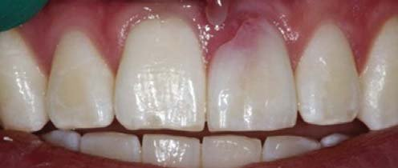
Фрактура коронкової частини зуба
Вважається, що внутрішньоканальне відбілювання, особливо термокаталітична активація, може призводити до підвищеної крихкості коронкової частини зуба. Автори припускають, що це може бути наслідком пересушування і зміни фізико-хімічних характеристик дентину та емалі.56-58 Клінічні спостереження підтверджують той факт, що зуби після відбілювання мають не більше ризиків фрактури, ніж зуби, які не піддавалися цій процедурі.
Використання бар'єра
Клінічно доведено, що затікання перекису в періодонт через дентинні канальці може призводити до цервікальної резорбції. Для запобігання цьому ускладненню слід створити бар'єр, що перешкоджає потраплянню перекису в зону періодонту. Слід враховувати такі фактори:
- Який бар'єр буде найліпшим?
- Де він повинен розташовуватися?
- Якої форми він має бути?
- Який вибрати матеріал?
Згідно з проведеними раніше дослідженнями і розробленими техніками, було рекомендовано використовувати як референтну точку цементоемалеве з'єднання (ЦЕЗ) зі щічної поверхні для розміщення бар'єра. Однак ЦЕЗ не перебуває на одному рівні, а має вигнутий профіль і поширюється в напрямку ріжучого краю на проксимальних поверхнях зуба. Плоский бар'єр залишає дентинні канальці на проксимальних поверхнях незахищеними: це зона, де зазвичай розвивається цервікальна резорбція. Проксимальні дентинні канальці мають бути захищені шляхом розміщення бар'єра.14, 59
Перенесення бар'єра
Для визначення позиції бар'єра провадяться пародонтальні зондування в трьох зонах з використанням індивідуалізованого пародонтального зонда. Пародонтальний зонд слід трохи зігнути по контуру вестибулярної поверхні зуба. Спочатку робиться зондування з вестибулярної, потім з дистальної та мезіальної поверхонь зуба. Це зондування провадиться для визначення розташування епітеліального прикріплення від ріжучого краю зуба (фото 8). Внутрішній рівень бар'єра буде розміщуватися на 1 мм до ріжучого краю щодо показників зовнішнього зондування епітеліального прикріплення. Такий підхід блокує дентинні канальці, які можуть сполучатися з періодонтальною зв'язкою, поширюючись апікально до епітеліального прикріплення.13, 14, 59
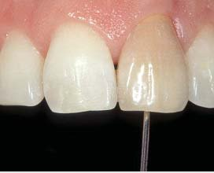
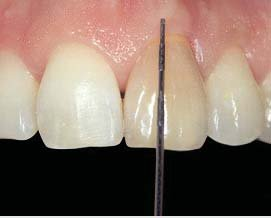
Основною метою є блокування дентинних канальців, що йдуть з порожнини зуба апікально до епітеліального прикріплення, для того, щоб відбілювальні агенти залишалися із зоною доступу (рис. 3).18, 60-62 Шляхом віднімання 1 мм від показників усіх трьох зондувань визначається рівень внесення внутрішнього бар'єра.
Рівень розташування піднебінної і вестибулярної порції бар'єра має бути однаковим (рис. 4). Профіль бар'єра з вестибулярної поверхні нагадує форму «бобслейного тунелю». Профіль бар'єра з проксимальної поверхні повинен мати форму ската (рис. 5). Рентгенологічне дослідження підтверджує правильність розташування бар'єра.
Існує також естетична причина не враховувати цементо-емалеве з'єднання (ЦЕЗ) як орієнтир для внесення бар'єра. У разі ясенної рецесії не відбудеться повноцінного відбілювання кореневої частини. Крім того, більше біологічне і естетично важливе значення має орієнтир у зоні епітеліального прикріплення.14
Після визначення і перенесення рівня епітеліального прикріплення бар'єр може бути внесений. Дослідження засвідчили, що такі матеріали, як IRM, цинк-фосфатні цементи, не дають повноцінного герметизму щодо відбілювального агента. Оптимальний матеріал — склоіономерний цемент. Проте сьогодні все ще йде пошук ідеального матеріалу для бар'єра.14, 18-21, 63
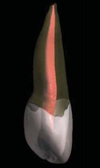
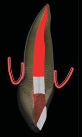
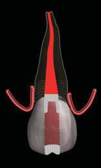
Висновки
Дисколорити девітальних зубів — досить поширена проблема у щоденній клінічній практиці. Зазвичай уражені зуби не просто темні, а мають тенденцію до ще більшого потемніння. Більше того, у 10% випадків спостерігається цервікальна резорбція, особливо в разі відсутності бар'єра або якщо бар'єр не був правильно внесений.14, 59 З метою безпечного внутрішньокоронкового відбілювання необхідно дотримуватися таких основних правил: 16, 59
- добра ізоляція;
- захист слизової оболонки;
- якісна обтурація кореневого каналу;
- використання бар'єра;
- правильне внесення ясенного бар'єра;
- уникнення додаткового застосування нагрівання, світла або кислотного протравлювання;
- незастосування високих концентрацій окислювальних відбілювальних агентів;
- регулярне динамічне спостереження.
Клінічний приклад
Пацієнтка звернулася зі скаргами на зміну кольору зуба 21. Зі слів пацієнтки, ендодонтичне лікування було проведене понад два роки тому, тоді ж відбулася зміна кольору. При обстеженні виявлена характерна для обтурації резорцин-формаліновим методом зміна кольору зуба 21, наявність незадовільних реставрацій, каріозних уражень проксимальних поверхонь зубів 12, 11, 21, виражена нерівномірна стертість ріжучого краю центральних різців з оголенням дентину, стирання ікол з точковим розкриттям дентину, наявність м'якого і пігментованого нальоту на всіх зубах (фото 1-4).
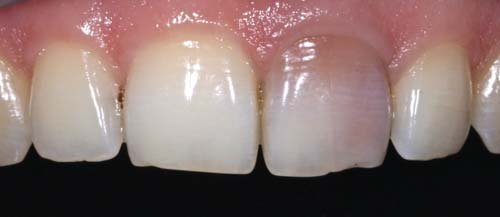
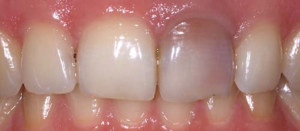
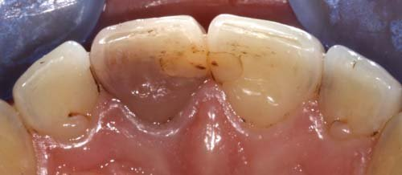
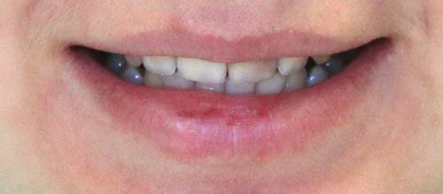
Був запропонований такий план лікування:
- Професійна гігієна порожнини рота.
- Повторне ендодонтичне лікування зуба 21.
- Внутрішньоканальне (внутрішньокоронкове) відбілювання зуба 21.
- При недостатній ефективності відбілювання — реставрація зуба 21 з глибоким препаруванням і перекриттям усієї вестибулярної поверхні реставраційним матеріалом. У разі успішного ендодонтичного відбілювання — мінімально інвазивне препарування та реставрація ріжучого краю зуба 21 із заміною реставрації на медіальній поверхні.
- Реставрація зубів 11, 13, 23 з відновленням ріжучого краю і рвучих горбиків.
План був узгоджений з пацієнткою і схвалений.
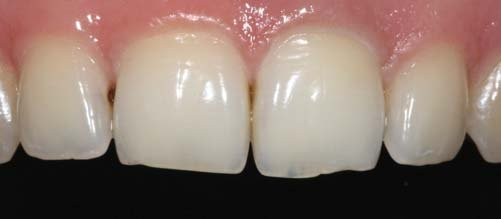
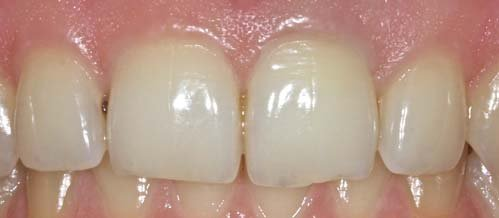
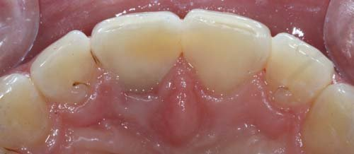
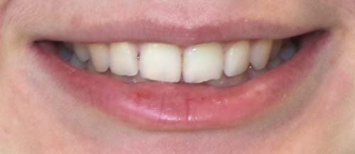
Лікування. Після професійної гігієни видалена реставрація, розкрита порожнина зуба 21, розпломбований кореневий канал з механічною обробкою інструментами Протейпер Некст/Protaper Next, рясною іригацією гіпохлоритом натрію з ультразвуковою активацією, обурація виконана гутаперчею інжекторним методом із силером Ейч плюс/AH plus. Після очищення порожнини Ейч плюс Клинер/AH plus Cleaner виконано захист ізолюючою прокладкою і внесено відбілювальний агент Опалесценс Ендо/Opalescence Endo, виконано тимчасове пломбування матеріалом Парасепт. Через 5 днів (фото 5-8) відбілювальний засіб вилучено, порожнину зуба закрито тимчасовою пломбою, оскільки при відбілюванні зубів резорцин-формаліновим методом висока ймовірність рецидиву дисколориту, і встановлений інтервал спостереження між відбілюванням і реставрацією було збільшено з 2 тижнів до 1,5 міс.
Ефект виявився стійким (фото 9, 10). Пацієнтка задоволена, але відмовилася робити корекцію ріжучих країв і вирішила обмежити втручання лікуванням карієсу і заміною реставрацій. Корекція стертості зубів була відкладена. Проведено заміну реставрацій зубів 11, 21, лікування карієсу на медіальній поверхні зуба 12 і дистальній поверхні зуба 11. На фото 11, 12 — клінічна ситуація безпосередньо після зняття рабердаму, до регідратації. Завдяки відбілюванню вдалося уникнути надмірної втрати твердих тканин при препаруванні зуба 21, зберегти натуральний, природний вигляд вестибулярної поверхні, її макро- і мікрорельєф.
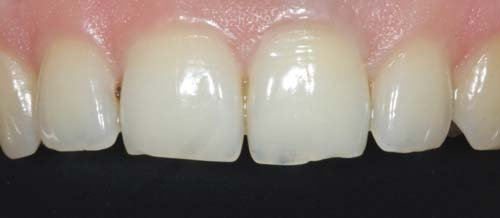
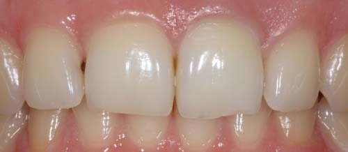
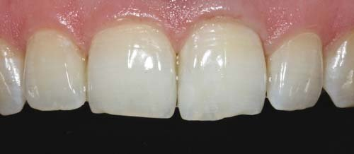
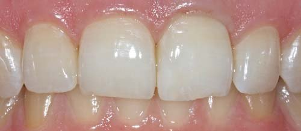
Література
- Abou-Rass M. Long-term prognosis of intentional endodontics and internal bleaching of tetracycline-stained teeth. Compend Contin Educ Dent., 1998. - 19: P.1034–1044.
- Al-Nazhan S. External root resorption after bleaching: a case report. Oral Surg Oral Med Oral Pathol, 1991. - 72: P.607–609.
- Baratieri L.N., Ritter A.V., Monteiro S., de Andrada M.A.C., Vieira L.C.C. Nonvital tooth bleaching: guidelines for the clinician. Quintessence Int., 1995. - 26: P.597–608.
- Rotstein I., Walton R. Bleaching discolored teeth: internal and external. In: Walton R.E., Torabinejad M., editors. Principles and practice of endodontics. ed 3. Philadelphia: Saunders; 2002: P.405.
- Rotstein I., Zalkind M., Mor C. et al. In vitro efficacy of sodium perborate preparations used for intracoronal bleaching of discolored nonvital teeth. Endod Dent Traumatol. 1991;7: P.177.
- Rotstein I., Mor C., Friedman S. Prognosis of intracoronal bleaching with sodium perborate preparation in vitro: 1-year study. J Endod. 1993;19: P.10.
- Davis M.C., Walton R.E., Rivera E.M. Sealer distribution in coronal dentin. J Endod. 2002; 28: P.464.
- Parsons J.R., Walton R.E., Ricks-Williamson L. In vitro longitudinal assessment of coronal discoloration from endodontic sealers. J Endod. 2001; 27: P.699.
- Walton R.E. Bleaching procedures for teeth with vital and nonvital pulps. In Levine N., ed: Current treatment in dental practice, Philadelphia, 1986, Saunders.
- Kim S.T., Abbott P.V., McGinley P. The effects of Ledermix paste on discolouration of mature teeth. Int Endod J. 2000; 33: P.227.
- Baratieri L.N., Ritter A.V., Monteiro S., de Andrada M.A.C., Vieira L.C.C. Nonvital tooth bleaching: guidelines for the clinician. Quintessence Int., 1995. – 26: P.597–608.
- Glockner K., Hulla H., Ebeleseder K., Stadtler P.S. Fiveyear follow-up of internal bleaching. Braz Dent J., 1999. - 10: P.105–110.
- Holmstrup G., Palm A.M., Lambjerg-Hansen H. Bleaching of discoloured root-filled teeth. Endod Dent Traumatol., 1988. - 4: P.197–201.
- Linda Greenwell – Bleaching Techniques in Restorative Dentistry.
- Rotstein I., Zalkind M., Mor C., Tarabeah A., Friedman S. In vitro efficacy of sodium perborate preparations used for intracoronal bleaching of discolored non-vital teeth. Endod Dent Traumatol., 1991. - 7: P.177–180.
Полный список литературы находится в редакции.